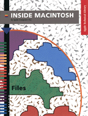

Files
Inside Macintosh: Files describes the parts of the Macintosh Operating System that allow you to manage files and other objects in the file system. This book shows in detail how your application can handle the commands typically found in the File menu. You'll learn how toAdditional aspects of the Macintosh Operating System are discussed in these Inside Macintosh books: Memory, Processes, Operating System Utilities, and Devices.
- create, open, update, save, and close files
- customize the user interface for opening and saving files
- search for specific files or directories on a volume
- obtain information about files or directories on a volume
- manage shared files
- keep track of specific files
- initialize and erase disks
- perform other advanced file-related operations
Availability: Click below to obtain Inside Macintosh: Files in any of the following formats.

Book Contents
- Figures, Tables, and Listings
- Preface - About This Book
- Chapter 1 - Introduction to File Management
- Chapter 2 - File Manager
- Chapter 3 - Standard File Package
- Chapter 4 - Alias Manager
- Chapter 5 - Disk Initialization Manager
- Glossary